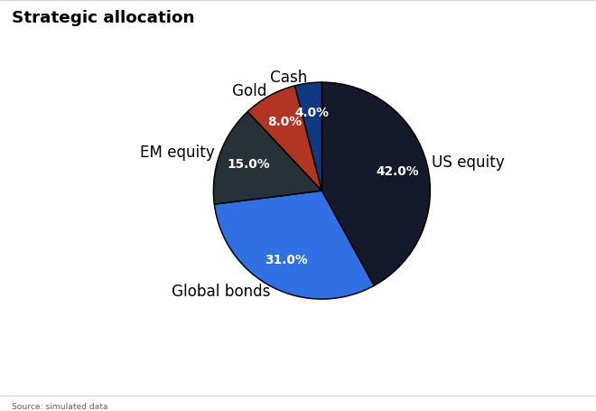
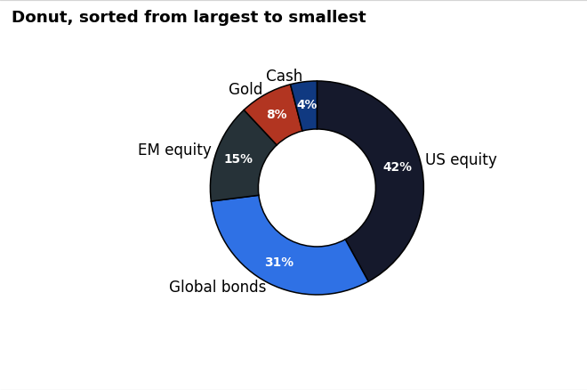
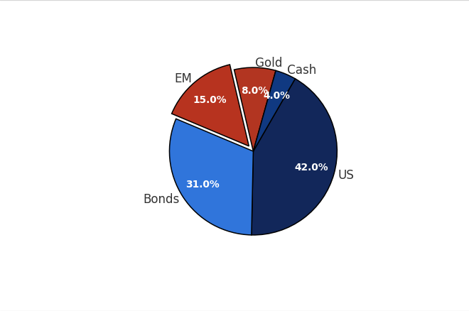
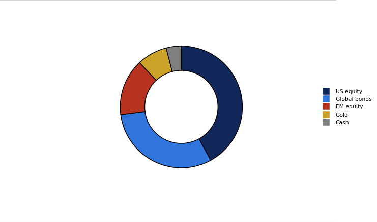
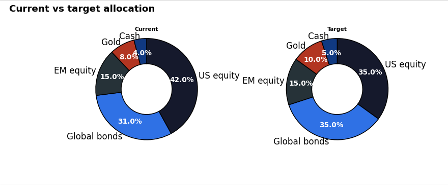

Pie chart: graph_pie¶
graph_pie() draws a pie or donut chart from one column of values. The index holds the categories (slice names) and the column holds the weights. Use it for a snapshot in time: asset allocation, sector, country, currency or rating distribution.
Expected DataFrame¶
import pandas as pd
import helpers_ps as hp
hp.set_graph_theme()
weights = pd.DataFrame(
{"Weight": [0.42, 0.31, 0.15, 0.08, 0.04]},
index=["US equity", "Global bonds", "EM equity", "Gold", "Cash"],
)
- The index values are the categories; it must be unique.
- Values cannot be negative and at least one must be greater than zero.
- If the DataFrame has one column,
tickercan be omitted. With several columns, passticker="ColumnName".
A time series? Take a snapshot first
graph_pie() does not select dates. To chart the weights at the last date of a wide DataFrame (index = dates, one column per asset), transpose the row you want:
Basic pie¶
g = (
hp.GraphMtplt(weights)
.graph_pie()
.add_title("Strategic allocation")
.add_source("Source: simulated data")
)

By default the first slice starts at 12 o'clock and the others follow clockwise (startangle=90, counterclock=False) and percentages are printed with one decimal (autopct="%1.1f%%").
Donut¶
donut_width (0-1) is the width of the ring as a fraction of the radius: 1 is a full pie, smaller values give a thinner ring.
g = (
hp.GraphMtplt(weights)
.graph_pie(donut_width=0.45, sort_values=True, pctdistance=0.78, autopct="%1.0f%%")
.add_title("Donut, sorted from largest to smallest")
)

Labels, colors and exploded slices¶
labels, colors and explode accept a list (same order as the index) or a dictionary keyed by category. A single color string paints every slice; a short list of colors repeats cyclically.
g = (
hp.GraphMtplt(weights)
.graph_pie(
labels={"US equity": "US", "Global bonds": "Bonds", "EM equity": "EM"}, # missing keys keep the index name
colors={"US equity": "#12275A", "Global bonds": "#3075DB", "EM equity": "#B7331F"},
explode={"EM equity": 0.08},
startangle=60,
label_color="#333333",
)
)

Hide percentages or category names¶
autopct=None removes the percentages and labeldistance=None removes the category names from the chart. Names are then usually shown in a legend. Pie slices do not feed the automatic legend, so register one marker per category with add_legend_point() and then call add_legend():
palette = {
"US equity": "#12275A",
"Global bonds": "#3075DB",
"EM equity": "#B7331F",
"Gold": "#C9A227",
"Cash": "#7F7F7F",
}
g = hp.GraphMtplt(weights).graph_pie(
colors=palette,
autopct=None,
labeldistance=None,
donut_width=0.4,
)
for name, color in palette.items():
g.add_legend_point(label=name, color=color, marker="s", markersize=8)
g.add_legend(loc="center left", bbox_to_anchor=(1.0, 0.5))

Several pies in one figure¶
Use plot() to create the grid and axis() to select each panel. Every panel can use a different DataFrame of the list:
current = weights
target = pd.DataFrame(
{"Weight": [0.35, 0.35, 0.15, 0.10, 0.05]},
index=weights.index,
)
g = (
hp.GraphMtplt([current, target])
.plot(ncols=2, figsize=(8, 4))
.add_title("Current vs target allocation")
.axis(0).graph_pie(df_index=0, donut_width=0.5).add_plot_title("Current")
.axis(1).graph_pie(df_index=1, donut_width=0.5).add_plot_title("Target")
)

Call add_title() before add_plot_title()
add_title() clears the title of the active axis. If you call it after add_plot_title(), the title of that panel disappears.
Parameters¶
| Parameter | Default | Description |
|---|---|---|
ticker |
None |
Column to plot. Optional when the DataFrame has one column. |
df_index |
0 |
DataFrame of the object to use. |
labels |
index names | List or dict of display names. |
colors |
palette | List, dict or a single color. |
explode |
None |
Offset of slices: number, list or dict (non-negative). |
donut_width |
None |
None = full pie; 0 < w <= 1 = donut. |
startangle |
90 |
Angle of the first slice. |
counterclock |
False |
Draw slices counterclockwise. |
autopct |
"%1.1f%%" |
Percentage format. None hides them. A callable is accepted. |
pctdistance |
0.72 |
Radial position of the percentages (0 center, 1 edge). |
labeldistance |
1.05 |
Radial position of the names. None hides them. |
normalize |
True |
Rescale values so they sum to 100%. With False, values that sum less than 1 draw a partial pie. |
sort_values |
False |
Sort slices from largest to smallest. |
textprops, wedgeprops |
None |
Raw Matplotlib dictionaries (wedgeprops={"edgecolor": "white"}). |
label_color, autopct_color, autopct_fontweight |
"black", "white", "bold" |
Text colors / weight. |
text_edge_color, text_edge_width |
None, 0.0 |
Outline around the text to improve readability. |
Full signature: API reference.
Typical use cases¶
- Asset allocation.
- Sector, geographic or issuer distribution.
- Rating distribution of a fixed income portfolio.
- Currency exposure.